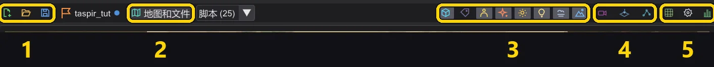
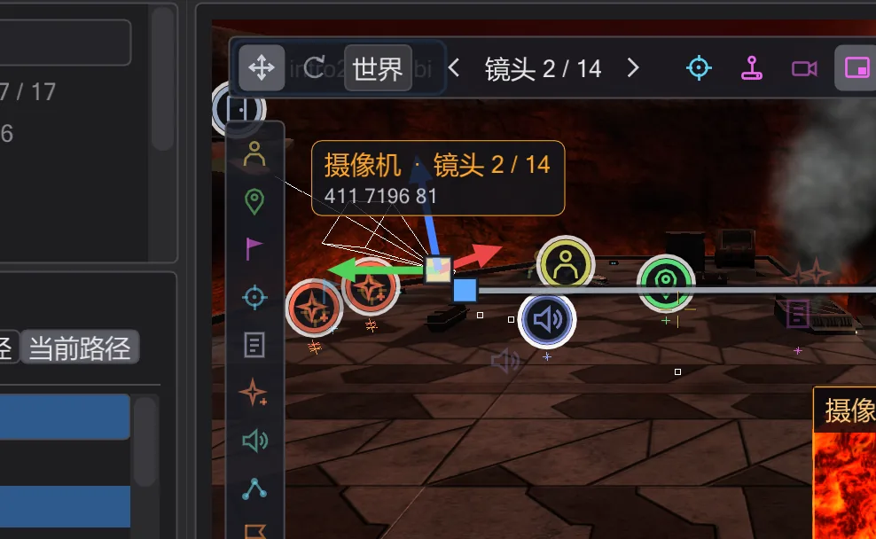
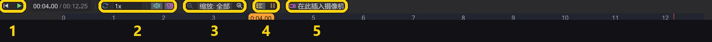
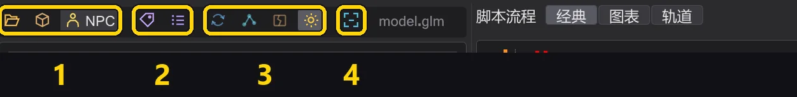

参考
所有按钮
程序中的每个按钮——模式栏、操作栏、地图工具栏、放置图块、检查器、摄像机、时间轴和模型视图——及其作用。
在程序中把鼠标悬停在任意按钮上,即可在工具提示中看到同样的说明。带彩色边框的按钮是开关:开或关。
模式栏#
最左侧的竖条切换窗口显示的内容。在每种模式下,脚本都保持不变。
| 模式 | 显示内容 |
|---|---|
| 事件 | 包含所有命令和宏的 事件 列表、脚本树、操作栏——用于编写脚本。编写脚本 |
| 任务 | 任务:实体列表与检查器、三维地图及其下方的时间轴——用于摄像机、角色、实体以及保存任务。地图 |
| 模型 | 角色模型及其动画——用于查找动画并放入脚本。模型视图与角色 |
操作栏(事件模式)#

| 按钮 | 作用 |
|---|---|
| 删除 | 删除所选行(Delete)。 |
| 克隆 | 在正下方插入一份副本(Space)。 |
| 复制 / 剪切 / 粘贴 | 剪贴板(Ctrl+C / X / V)。粘贴到所选内容下方;来自其他程序的文本经确认后也可粘贴。 |
| 注释掉 | 把行变为注释,或恢复原状(Backspace)。 |
| 查找 | 查找窗口(Ctrl+F):按命令或值搜索,在一个或所有脚本中替换。在所有打开的脚本中查找和替换 |
| 上移 / 下移 | 在所在块内把所选内容移动一行(Alt+↑/↓)。 |
| 撤销 / やり直し | 撤销和重做。右键单击其中任一按钮可查看完整历史。撤销任何操作——甚至是中间的某一步 |
| 新建 / 打开 | 新建空白脚本 / 打开 .txt 或已编译的 .ibi。 |
| 最近 | 最近打开的文件(Alt+M)。 |
| 追加 | 把另一个脚本追加到当前脚本末尾。 |
| 保存 / 全部保存 / 另存为 | 保存当前脚本、所有已修改的标签页,或另存为新名称。 |
| 导出 | 把脚本写成纯文本并打开。 |
| 备份 / 还原 | 在脚本旁保存一份副本(.bak)/ 恢复到该副本(Alt+B / Alt+R)。 |
| 显示类型 | 在树中显示值的类型。 |
| %g 浮点数 | 简短显示数字:1000 而不是 1000.000。 |
| 折叠宏 | 把宏显示为一行。 |
| + / - | 展开或折叠所有块。 |
| 编译！ | 保存脚本并写出游戏运行的 .ibi;成功时显示绿色,失败时显示红色并附带消息。编译并修复错误 |
地图工具栏(任务模式)#

| 编号 | 名称 | 作用 |
|---|---|---|
| 1 | 任务 | 新建任务、加载任务…、保存任务——以及当前打开的任务名称。 |
| 2 | 地图和文件 | 打开地图、任务文件夹或 .ent 文件;旁边的 脚本 (N) 列出地图的脚本。 |
| 3 | 视图显示的内容 | 实体、名称、角色、特效、辉光、动态光、雾、天空——每项都是一个开关。 |
| 4 | 观看 | 透过摄像机、俯视图、NPC 路径点窗口。 |
| 5 | 工具 | 网格、视图设置、统计。 |
各按钮详解:
| 按钮 | 作用 |
|---|---|
 新建任务 新建任务 | 在任意地图上开始任务:创建玩家出生点、脚本运行器、开场脚本和任务文件夹。1 · 创建任务 |
 加载任务… 加载任务… | 从 .pk3 打开任务:地图、实体、所有脚本(每个一个标签页)、角色。任务 |
 保存任务 保存任务 | 先检查任务,然后保存所有脚本、写出 .ent、编译并打包 .pk3。8 · 保存并游玩 |
 没有任务 没有任务 | 当前打开的任务名称;圆点表示有未保存的修改。悬停可查看其文件夹。 |
 地图和文件 地图和文件 | 从磁盘或 .pk3 打开地图,或打开任务文件夹、单独的 .ent 文件。 |
| 脚本 | 地图实体所引用的脚本——选择一个即可打开。 |
 实体 实体 | 显示实体标记:行走目标、标记、运行器、生成器。 |
 名称 名称 | 在视图中显示实体和角色的名称。 |
 角色 角色 | 显示脚本中的角色,随时间轴移动。 |
 特效 特效 | 显示地图的特效(fx_runner)。 |
 发光 发光 | 标记为 glow 的着色器的辉光,效果同 r_DynamicGlow。 |
 动态光 动态光 | 光剑和特效光照亮墙壁与角色。 |
 雾 雾 | 地图的雾,与游戏中的绘制效果一致。 |
 天空 天空 | 天空;关闭后可以从外部看进地图。 |
 通过摄像机 通过摄像机 | 显示摄像机看到的画面——所选的摄像机命令,或播放头处的摄像机。工作时透过摄像机观看 |
 俯视图 俯视图 | 垂直向下看;剖切高度可隐藏天花板。从上方查看地图 |
 NPC 路径点 NPC 路径点 | NPC 路径点窗口:显示、创建和检查网络。NPC 路径点 |
 网格 网格 | 拖动和放置时把实体对齐到 8 到 64 单位。 |
 视图设置 视图设置 | 亮度、环境光、细节、阴影、高亮当前脚本的实体,以及游戏画面:宽高比、cg_fovAspectAdjust 和自由视图中的画面框(预览与透过镜头观看)。在昏暗的地图中看得更清楚 |
 统计 统计 | 帧率、纹理、三角形数和显卡信息。 |
放置图块#
地图左边缘的竖条。单击一个图块,再单击地面——或把图块拖进视图。Shift 可连续放置多个,Esc 结束。放置、移动和旋转实体
| 按钮 | 作用 |
|---|---|
| 角色 (NPC_spawner) | 会生成的角色:设置 NPC_type 和名称。 |
 行走目标 (waypoint_navgoal) 行走目标 (waypoint_navgoal) | 角色行走前往的地点(SET_NAVGOAL)。 |
 摄像机/注视标记 (ref_tag) 摄像机/注视标记 (ref_tag) | 带方向的标记——用于摄像机(tag)和注视目标。 |
 注视目标 (target_position) 注视目标 (target_position) | 用于注视或瞄准的点。 |
 脚本运行器 (target_scriptrunner) 脚本运行器 (target_scriptrunner) | 被使用时运行脚本——由触发器、玩家出生点或其他脚本使用。 |
| 特效 (fx_runner) | 播放特效文件(.efx)。 |
 声音 (target_speaker) 声音 (target_speaker) | 播放声音,一次或循环。 |
| NPC 路径点 (waypoint) | NPC 导航网络中的一个点。 |
| 玩家出生点 (info_player_start) | 玩家出生的位置。 |
实体检查器#

| 按钮 | 作用 |
|---|---|
 飞过去 飞过去 | 让视图飞到该实体。 |
 放到地面 放到地面 | 把它放到下方的地面上,与游戏中的 DROPTOFLOOR 相同。 |
 复制 复制 | 复制——所有选中的实体。在视图中 Alt+拖动效果相同。 |
 删除 删除 | 删除它。 |
 动画 动画 | 为门、平台、飞船和特效打开动画窗口。移动物体动画与 ROFF 文件 |
 撤销 撤销 | 撤销上一次实体修改(实体有自己的历史)。 |
 やり直し やり直し | 重做。 |
 全部键 (原始) 全部键 (原始) | 以纯文本显示每个键。 |
| + 键 | 添加一个键。 |
| 打开 | 位于脚本键旁:打开该脚本——如果脚本还不存在,则在任务文件夹中创建它。 |
摄像机工具栏#
选中摄像机时出现在视图中。摄像机

| 按钮 | 作用 |
|---|---|
 移动 移动 | 箭头:沿某一轴移动镜头;中间的方块:在视平面内移动。 |
 旋转 旋转 | 圆环:旋转镜头。 |
| 世界 | 世界或本地:箭头跟随地图坐标轴或摄像机。 |
 上一个镜头 上一个镜头 | 上一个镜头。 |
 下一个镜头 下一个镜头 | 下一个镜头。 |
| 设为当前视角 | 把镜头放到你正在看的位置。 |
 驾驶 驾驶 | 进入镜头并驾驶它;Enter 设置关键帧。亲自驾驶镜头 |
| 通过摄像机 | 透过摄像机观看。 |
 摄像机预览 摄像机预览 | 在角落显示摄像机视角的小画面。 |
 在此新建镜头 在此新建镜头 | 在你的视角处新建镜头,位于所选镜头之后。 |
| 删除镜头 | 删除镜头。 |
时间轴#

| 编号 | 名称 | 作用 |
|---|---|---|
| 1 | 播放 | 回到开头、播放 / 停止——旁边的时间显示可在秒和帧之间切换。 |
| 2 | 回放 | 循环、声音、跟随摄像机——以及速度列表。 |
| 3 | 缩放 | 显示更多或更少的时间。 |
| 4 | 行 | 每个角色一行、空闲行、等待显示为块。 |
| 5 | 在此插入摄像机 | 在播放头处插入摄像机镜头。 |
各按钮详解:
| 按钮 | 作用 |
|---|---|
 回到开头 回到开头 | 回到脚本开头。 |
 播放 播放 | 以游戏时间播放场景——摄像机、角色、声音。 |
 循环 循环 | 到结尾时重新开始。 |
| 声音 | 时间轴运行时播放声音——从视图所显示的摄像机处收听,与游戏中一样。与游戏一致的声音 |
 跟随 跟随 | 视图随摄像机一起移动。 |
 缩小 缩小 | 显示更多时间。 |
 放大 放大 | 显示更少时间,更加详细。 |
 角色行 角色行 | 每个角色一行:显示每个角色何时行走、说话和行动。 |
 空闲轨道 空闲轨道 | 也显示没有任何事件的行。 |
 等待 等待 | 把等待显示为独立的块。 |
| 在此插入摄像机 | 在播放头处插入摄像机镜头。 |
单击时间显示可在秒和帧之间切换;播放按钮旁的列表用于设置速度。拖动块可在时间上移动它们——时间轴。
模型工具栏(模型模式)#

| 编号 | 名称 | 作用 |
|---|---|---|
| 1 | 打开 | 磁盘上的 .glm、归档中的模型,或游戏中的角色(NPC)。 |
| 2 | 皮肤与骨架 | 另一个 .skin、另一个 .gla。 |
| 3 | 观看 | 转台、骨骼、断面、纹理。 |
| 4 | 适应视图 | 从正面显示整个模型。 |
各按钮详解:
| 按钮 | 作用 |
|---|---|
| 打开 .glm… | 从磁盘打开 .glm 模型。 |
 从 .pk3… 从 .pk3… | 从游戏归档中打开模型。 |
| NPC | 游戏中的每个角色——单击即可按游戏中的样子加载。 |
| 打开 .skin… | 为模型加载 .skin。 |
| 加载 .gla… | 加载另一个骨架 / 动画文件(.gla)。 |
| 转台 | 让模型缓慢自转。 |
| 骨骼 | 显示骨架。 |
 显示封盖 显示封盖 | 显示肢体连接处表面的断面。 |
| 纹理 | 打开或关闭纹理。 |
 适应视图 适应视图 | 从正面显示整个模型。 |
| 复制 | 在动画列表中:复制动画名称。 |
| 插入脚本 | 把该动画的 set ( SET_ANIM_BOTH, ... ) 放入脚本。让角色播放动画 |